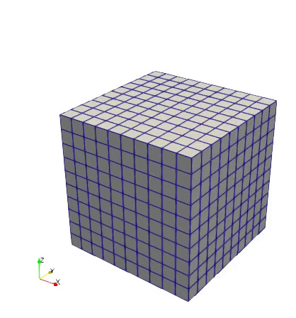
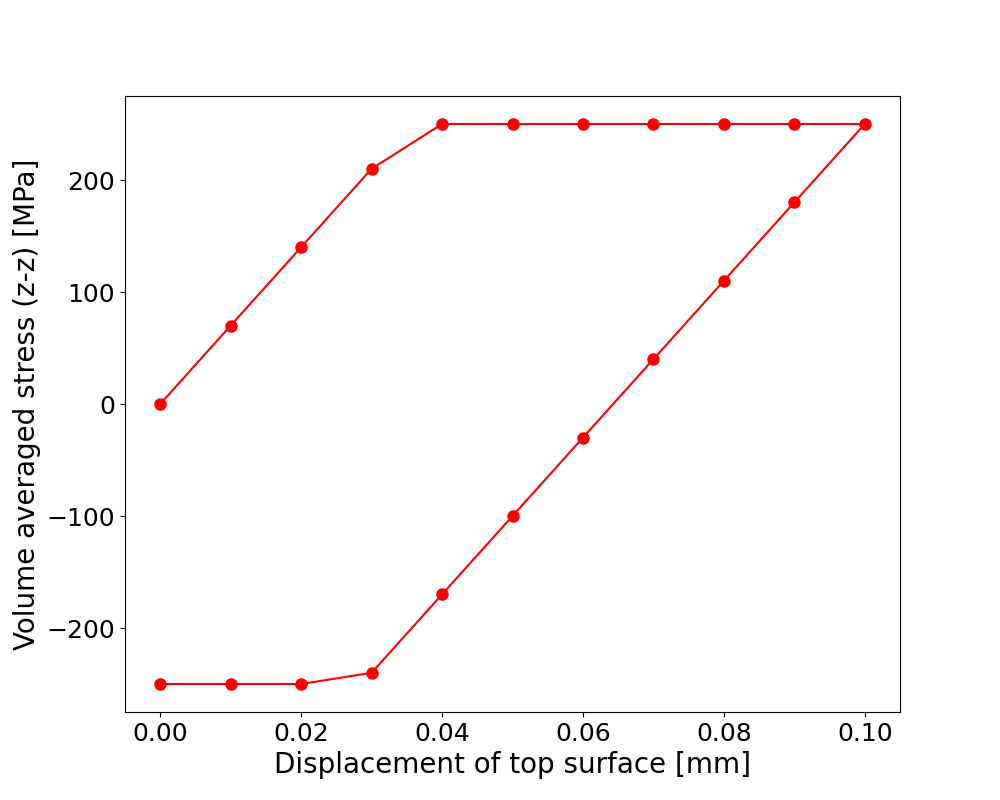

Plasticity#
Problem definition#
Elastoplastic materials, such as metals and engineering alloys, exhibit irreversible deformation behavior characterized by elastic-plastic coupling and path-dependent stress-strain relationships beyond the yield threshold. This example demostrate how to solve the J2 plasticity model [1] using JAX-FEM, with particular focus on the return mapping algorithm and incremental loading schemes that capture the nonlinear material response under displacement-controlled loading conditions.
For perfect J2-plasticity model [1], we assume that the total strain \(\boldsymbol{\varepsilon}^{n-1}\) and stress \(\boldsymbol{\sigma}^{n-1}\) from the previous loading step are known, and the problem states that find the displacement field \(\boldsymbol{u}^n\) at the current loading step such that
The weak form gives
In this example, we consider a displacement-controlled uniaxial tensile loading condition. We assume free traction (\(\boldsymbol{t} = [0,0,0]\)) and ignore body force (\(\boldsymbol{b} = [0,0,0]\)). We assume quasi-static loadings from 0 to 0.1 mm and then unload from 0.1 mm to 0.
The stress \(\boldsymbol{\sigma}^n\) is defined with the following relationships:
where \(\boldsymbol{\sigma}_{\text{trial}}\) is the elastic trial stress, \(\boldsymbol{s}\) is the deviatoric part of \(\boldsymbol{\sigma}_{\text{trial}}\), \(f_{\text{yield}}\) is the yield function, \(\sigma_{\text{yield}}\) is the yield strength, \(\langle x \rangle_+ := \frac{1}{2}(x + |x|)\) is the ramp function, and \(\boldsymbol{\sigma}^n\) is the stress at the current loading step.
Implementation#
First, we need to import some useful modules and jax_fem specific modules：
[ ]:
# Import some useful modules.
import jax
import jax.numpy as np
import os
import matplotlib.pyplot as plt
# Import JAX-FEM specific modules.
from jax_fem.problem import Problem
from jax_fem.solver import solver
from jax_fem.utils import save_sol
from jax_fem.generate_mesh import box_mesh_gmsh, get_meshio_cell_type, Mesh
Weak form#
In this J2 plasticity example, we use the Laplace Kernel to handle elastoplastic constitutive relations by overriding the get_tensor_map method to define the stress return mapping algorithm that enforces the von Mises yield criterion.
The custom_init() method initializes internal variables self.internal_vars = [self.sigmas_old, self.epsilons_old] to store historical stress and strain states required for path-dependent plasticity computations.
The get_maps() method implements the plasticity algorithms: strain(u_grad) computes the strain tensor from displacement gradients, while stress_return_map(u_grad, sigma_old, epsilon_old) performs the return mapping to project trial stresses back to the yield surface. The update_stress_strain() method advances the internal state variables after each loading increment, ensuring proper tracking of plastic deformation history essential for incremental plasticity formulations.
It should be particularly noted that
stress_return_map(u_grad, sigma_old, epsilon_old)takes two internal variablessigma_oldandepsilon_old, and they MUST be correspondingly defined (and updated) usingself.internal_vars = [self.sigmas_old, self.epsilons_old]. Otherwise, JAX-FEM will NOT know that there are two internal variables needed.
[ ]:
# Define constitutive relationship.
class Plasticity(Problem):
# The function 'get_tensor_map' overrides base class method. Generally, JAX-FEM
# solves -div(f(u_grad,alpha_1,alpha_2,...,alpha_N)) = b. Here, we have
# f(u_grad,alpha_1,alpha_2,...,alpha_N) = sigma_crt(u_crt_grad, epsilon_old, sigma_old),
# reflected by the function 'stress_return_map'
def custom_init(self):
# Override base class method.
# Initializing total strain and stress.
self.fe = self.fes[0]
self.epsilons_old = np.zeros((len(self.fe.cells), self.fe.num_quads, self.fe.vec, self.dim))
self.sigmas_old = np.zeros_like(self.epsilons_old)
self.internal_vars = [self.sigmas_old, self.epsilons_old]
def get_tensor_map(self):
# Override base class method.
_, stress_return_map = self.get_maps()
return stress_return_map
def get_maps(self):
def safe_sqrt(x):
# np.sqrt is not differentiable at 0
safe_x = np.where(x > 0., np.sqrt(x), 0.)
return safe_x
def safe_divide(x, y):
return np.where(y == 0., 0., x/y)
def strain(u_grad):
epsilon = 0.5*(u_grad + u_grad.T)
return epsilon
def stress(epsilon):
E = 70.e3
nu = 0.3
mu = E/(2.*(1. + nu))
lmbda = E*nu/((1+nu)*(1-2*nu))
sigma = lmbda*np.trace(epsilon)*np.eye(self.dim) + 2*mu*epsilon
return sigma
def stress_return_map(u_grad, sigma_old, epsilon_old):
sig0 = 250.
epsilon_crt = strain(u_grad)
epsilon_inc = epsilon_crt - epsilon_old
sigma_trial = stress(epsilon_inc) + sigma_old
s_dev = sigma_trial - 1./self.dim*np.trace(sigma_trial)*np.eye(self.dim)
s_norm = safe_sqrt(3./2.*np.sum(s_dev*s_dev))
f_yield = s_norm - sig0
f_yield_plus = np.where(f_yield > 0., f_yield, 0.)
sigma = sigma_trial - safe_divide(f_yield_plus*s_dev, s_norm)
return sigma
return strain, stress_return_map
def stress_strain_fns(self):
strain, stress_return_map = self.get_maps()
vmap_strain = jax.vmap(jax.vmap(strain))
vmap_stress_return_map = jax.vmap(jax.vmap(stress_return_map))
return vmap_strain, vmap_stress_return_map
def update_stress_strain(self, sol):
u_grads = self.fe.sol_to_grad(sol)
vmap_strain, vmap_stress_rm = self.stress_strain_fns()
self.sigmas_old = vmap_stress_rm(u_grads, self.sigmas_old, self.epsilons_old)
self.epsilons_old = vmap_strain(u_grads)
self.internal_vars = [self.sigmas_old, self.epsilons_old]
def compute_avg_stress(self):
# For post-processing only: Compute volume averaged stress.
# (num_cells*num_quads, vec, dim) * (num_cells*num_quads, 1, 1) -> (vec, dim)
sigma = np.sum(self.sigmas_old.reshape(-1, self.fe.vec, self.dim) * self.fe.JxW.reshape(-1)[:, None, None], 0)
vol = np.sum(self.fe.JxW)
avg_sigma = sigma/vol
return avg_sigma
Mesh#
Here we use the first-order hexahedron element HEX8 to discretize the computational domain:
[ ]:
ele_type = 'HEX8'
cell_type = get_meshio_cell_type(ele_type)
data_dir = os.path.join(os.path.dirname(__file__), 'data')
Lx, Ly, Lz = 10., 10., 10.
meshio_mesh = box_mesh_gmsh(Nx=10, Ny=10, Nz=10, Lx=Lx, Ly=Ly, Lz=Lz, data_dir=data_dir, ele_type=ele_type)
mesh = Mesh(meshio_mesh.points, meshio_mesh.cells_dict[cell_type])
Boundary conditions#
The boundary conditions implement a displacement-controlled uniaxial tensile test: the bottom surface (\(z=0\)) is fixed with zero displacement constraint dirichlet_val_bottom(point) = 0, while the top surface (\(z=L_z\)) undergoes prescribed displacement loading through get_dirichlet_top(disp). The loading sequence disps defines a loading-unloading cycle from 0 to 0.1 mm followed by unloading back to 0, with both constraints applied to the z-component (vecs = [2, 2]) to
simulate the uniaxial tension.
[ ]:
# Define boundary locations.
def top(point):
return np.isclose(point[2], Lz, atol=1e-5)
def bottom(point):
return np.isclose(point[2], 0., atol=1e-5)
# Define Dirichlet boundary values.
# We fix the z-component of the displacement field to be zero on the 'bottom'
# side, and control the z-component on the 'top' side.
def dirichlet_val_bottom(point):
return 0.
def get_dirichlet_top(disp):
def val_fn(point):
return disp
return val_fn
disps = np.hstack((np.linspace(0., 0.1, 11), np.linspace(0.09, 0., 10)))
location_fns = [bottom, top]
value_fns = [dirichlet_val_bottom, get_dirichlet_top(disps[0])]
vecs = [2, 2]
dirichlet_bc_info = [location_fns, vecs, value_fns]
Problem#
We have completed all the preliminary preparations for the problem. Then we can proceed to create an instance of our BVP:
[ ]:
problem = Plasticity(mesh, vec=3, dim=3, dirichlet_bc_info=dirichlet_bc_info)
Solver#
The defined BVP is solved incrementally using solver() for each displacement step in the loading-unloading cycle. Here, we employ the Newton-Raphson method with PETSc solver, where the internal stress-strain states are updated after each converged solution via problem.update_stress_strain().
[ ]:
avg_stresses = []
for i, disp in enumerate(disps):
print(f"\nStep {i} in {len(disps)}, disp = {disp}")
dirichlet_bc_info[-1][-1] = get_dirichlet_top(disp)
problem.fe.update_Dirichlet_boundary_conditions(dirichlet_bc_info)
sol_list = solver(problem, solver_options={'petsc_solver': {}})
problem.update_stress_strain(sol_list[0])
avg_stress = problem.compute_avg_stress()
print(avg_stress)
avg_stresses.append(avg_stress)
vtk_path = os.path.join(data_dir, f'vtk/u_{i:03d}.vtu')
save_sol(problem.fe, sol_list[0], vtk_path)
avg_stresses = np.array(avg_stresses)
Postprocessing#
The solution can be exported to VTK format files (readable by ParaView and other post-processing software) using jax_fem’s built-in function save_sol:
[ ]:
# Plot the volume-averaged stress versus the vertical displacement of the top surface.
fig = plt.figure(figsize=(10, 8))
plt.plot(disps, avg_stresses[:, 2, 2], color='red', marker='o', markersize=8, linestyle='-')
plt.xlabel(r'Displacement of top surface [mm]', fontsize=20)
plt.ylabel(r'Volume averaged stress (z-z) [MPa]', fontsize=20)
plt.tick_params(labelsize=18)
plt.show()

z-z component of volume-averaged stress versus displacement of the top surface.

Stress-strain curve.
Please refer to this link to download the source file.